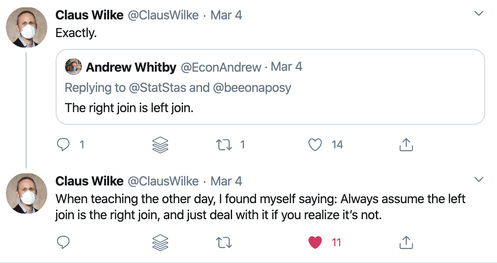
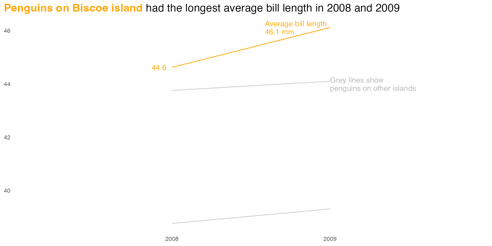
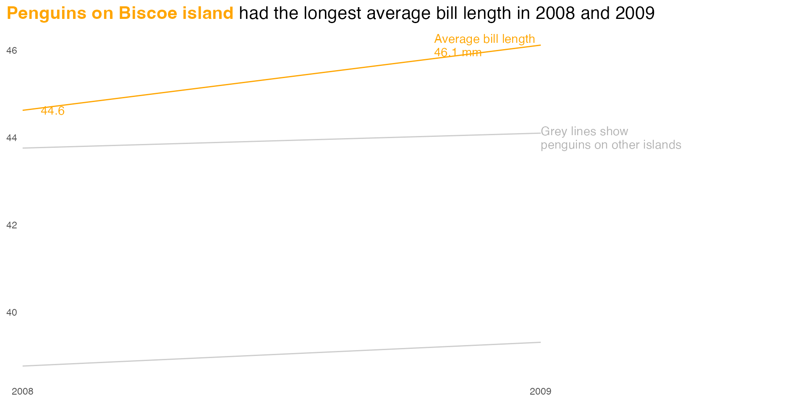

Going Deeper with R
Downloading and Importing Data
Downloading Data Directly
Downloading Data Directly
The download.file() function lets us download files directly from websites.
Importing Excel Files
Importing Excel Files
Importing Excel Files
# A tibble: 51 × 4
state number_of_german_spe…¹ number_of_german_spe…² number_of_german_spe…³
<chr> <chr> <chr> <chr>
1 Alabama 426 395 711
2 Alaska 331 201 131
3 Arizona 636 858 136
4 Arkansas - 635 557
5 Califor… 440 318 854
6 Colorado 251 498 768
7 Connect… 187 334 586
8 Delaware - 998 453
9 Distric… 799 745 180
10 Florida 399 924 958
# ℹ 41 more rows
# ℹ abbreviated names: ¹number_of_german_speakers_2017,
# ²number_of_german_speakers_2018, ³number_of_german_speakers_2019Other Packages for Importing Data


My Turn
Working with data on third grade math proficiency in Oregon schools, I’ll do the following:
Create a new project
Create a new R script file where I’ll do all of my data downloading, cleaning, and importing work
My Turn, Continued
Download the five most recent math proficiency scores (from 2015-2016 to 2018-2019 as well as 2021-2022) and put them in a
data-rawfolderImport the 2021-2022 data into a data frame called
math_scores_2021_2022using theclean_names()function from thejanitorpackage to make our variable names easy to work with
Your Turn
You’ll be working with data on Oregon school enrollment by race/ethnicity.
Create a new project. Make sure you put it somewhere you’ll be able to find it again later!
Create a new R script file where you’ll do all of your data downloading, cleaning, and importing work.
Your Turn, Continued
Download the five most recent Fall Membership Report files using the
download.file()function into adata-rawfolder (which you’ll need to create).Import the 2022-2023 spreadsheet into a data frame called
enrollment_2022_2023, using theclean_names()function from thejanitorpackage to make our variable names easy to work with.
Overview of Tidy Data

Untidy Data
# A tibble: 51 × 4
state number_of_german_spe…¹ number_of_german_spe…² number_of_german_spe…³
<chr> <dbl> <dbl> <dbl>
1 Alabama 426 395 711
2 Alaska 331 201 131
3 Arizona 636 858 136
4 Arkansas NA 635 557
5 Califor… 440 318 854
6 Colorado 251 498 768
7 Connect… 187 334 586
8 Delaware NA 998 453
9 Distric… 799 745 180
10 Florida 399 924 958
# ℹ 41 more rows
# ℹ abbreviated names: ¹number_of_german_speakers_2017,
# ²number_of_german_speakers_2018, ³number_of_german_speakers_2019Untidy Data
german_speakers_numeric |>
mutate(total = number_of_german_speakers_2017 +
number_of_german_speakers_2018 +
number_of_german_speakers_2019) |>
select(state, total)# A tibble: 51 × 2
state total
<chr> <dbl>
1 Alabama 1532
2 Alaska 663
3 Arizona 1630
4 Arkansas NA
5 California 1612
6 Colorado 1517
7 Connecticut 1107
8 Delaware NA
9 District of Columbia 1724
10 Florida 2281
# ℹ 41 more rowsTidy Data
# A tibble: 153 × 3
state year number
<chr> <chr> <dbl>
1 Alabama number_of_german_speakers_2017 426
2 Alabama number_of_german_speakers_2018 395
3 Alabama number_of_german_speakers_2019 711
4 Alaska number_of_german_speakers_2017 331
5 Alaska number_of_german_speakers_2018 201
6 Alaska number_of_german_speakers_2019 131
7 Arizona number_of_german_speakers_2017 636
8 Arizona number_of_german_speakers_2018 858
9 Arizona number_of_german_speakers_2019 136
10 Arkansas number_of_german_speakers_2017 NA
# ℹ 143 more rowsTidy Data
# A tibble: 51 × 2
state total
<chr> <dbl>
1 Alabama 1532
2 Alaska 663
3 Arizona 1630
4 Arkansas 1192
5 California 1612
6 Colorado 1517
7 Connecticut 1107
8 Delaware 1451
9 District of Columbia 1724
10 Florida 2281
# ℹ 41 more rowsThe Three Rules of Tidy Data
Every column is a variable.
Every row is an observation.
Every cell is a single value.
My Turn
Let’s take a look at the math proficiency data and see which principles of tidy data it violates
Your Turn
Take a look at your data and see which principles of tidy data it violates
Tidy Data Rule #1: Every Column is a Variable
# A tibble: 51 × 4
state number_of_german_spe…¹ number_of_german_spe…² number_of_german_spe…³
<chr> <chr> <chr> <chr>
1 Alabama 426 395 711
2 Alaska 331 201 131
3 Arizona 636 858 136
4 Arkansas - 635 557
5 Califor… 440 318 854
6 Colorado 251 498 768
7 Connect… 187 334 586
8 Delaware - 998 453
9 Distric… 799 745 180
10 Florida 399 924 958
# ℹ 41 more rows
# ℹ abbreviated names: ¹number_of_german_speakers_2017,
# ²number_of_german_speakers_2018, ³number_of_german_speakers_2019pivot_longer()
pivot_longer()
# A tibble: 51 × 4
state number_of_german_spe…¹ number_of_german_spe…² number_of_german_spe…³
<chr> <chr> <chr> <chr>
1 Alabama 426 395 711
2 Alaska 331 201 131
3 Arizona 636 858 136
4 Arkansas - 635 557
5 Califor… 440 318 854
6 Colorado 251 498 768
7 Connect… 187 334 586
8 Delaware - 998 453
9 Distric… 799 745 180
10 Florida 399 924 958
# ℹ 41 more rows
# ℹ abbreviated names: ¹number_of_german_speakers_2017,
# ²number_of_german_speakers_2018, ³number_of_german_speakers_2019pivot_longer()
# A tibble: 153 × 3
state name value
<chr> <chr> <chr>
1 Alabama number_of_german_speakers_2017 426
2 Alabama number_of_german_speakers_2018 395
3 Alabama number_of_german_speakers_2019 711
4 Alaska number_of_german_speakers_2017 331
5 Alaska number_of_german_speakers_2018 201
6 Alaska number_of_german_speakers_2019 131
7 Arizona number_of_german_speakers_2017 636
8 Arizona number_of_german_speakers_2018 858
9 Arizona number_of_german_speakers_2019 136
10 Arkansas number_of_german_speakers_2017 -
# ℹ 143 more rowspivot_longer()
# A tibble: 153 × 3
state name value
<chr> <chr> <chr>
1 Alabama number_of_german_speakers_2017 426
2 Alabama number_of_german_speakers_2018 395
3 Alabama number_of_german_speakers_2019 711
4 Alaska number_of_german_speakers_2017 331
5 Alaska number_of_german_speakers_2018 201
6 Alaska number_of_german_speakers_2019 131
7 Arizona number_of_german_speakers_2017 636
8 Arizona number_of_german_speakers_2018 858
9 Arizona number_of_german_speakers_2019 136
10 Arkansas number_of_german_speakers_2017 -
# ℹ 143 more rowspivot_longer()
# A tibble: 153 × 3
state year number
<chr> <chr> <chr>
1 Alabama number_of_german_speakers_2017 426
2 Alabama number_of_german_speakers_2018 395
3 Alabama number_of_german_speakers_2019 711
4 Alaska number_of_german_speakers_2017 331
5 Alaska number_of_german_speakers_2018 201
6 Alaska number_of_german_speakers_2019 131
7 Arizona number_of_german_speakers_2017 636
8 Arizona number_of_german_speakers_2018 858
9 Arizona number_of_german_speakers_2019 136
10 Arkansas number_of_german_speakers_2017 -
# ℹ 143 more rowsMy Turn
I’ll do the following to create a new data frame called third_grade_math_proficiency_2021_2022:
Use
filter()to only keep rows where thestudent_groupvariable is “Total Population (All Students)”Use
filter()to only keep third grade students
My Turn, Continued
Use
select()to only keep theyearandschool_idvariables as well as all variables related to the number (not percentage) of students who are proficient in mathUse
pivot_longer()to make my data frame tidy
Your Turn
Do the following to create a new data frame called enrollment_by_race_ethnicity_2022_2023:
Start with the
enrollment_2022_2023data frame.select()thedistrict_institution_idandschool_institution_idvariables as well as those about number of students by race/ethnicity and get rid of all others.
Your Turn, Continued
Use
pivot_longer()to convert all of the race/ethnicity variables into one variable.Within
pivot_longer(), use thenames_toargument to call that variablerace_ethnicity.Within
pivot_longer(), use thevalues_toargument to call that variablenumber_of_students.
Tidy Data Rule #3: Every Cell is a Single Value
Every Cell is a Single Value
# A tibble: 153 × 3
state year number
<chr> <chr> <chr>
1 Alabama number_of_german_speakers_2017 426
2 Alabama number_of_german_speakers_2018 395
3 Alabama number_of_german_speakers_2019 711
4 Alaska number_of_german_speakers_2017 331
5 Alaska number_of_german_speakers_2018 201
6 Alaska number_of_german_speakers_2019 131
7 Arizona number_of_german_speakers_2017 636
8 Arizona number_of_german_speakers_2018 858
9 Arizona number_of_german_speakers_2019 136
10 Arkansas number_of_german_speakers_2017 -
# ℹ 143 more rowsstr_remove()
str_remove()
str_remove()
german_speakers |>
pivot_longer(cols = -state,
names_to = "year",
values_to = "number") |>
mutate(year = str_remove(year, "number_of_german_speakers_"))# A tibble: 153 × 3
state year number
<chr> <chr> <chr>
1 Alabama 2017 426
2 Alabama 2018 395
3 Alabama 2019 711
4 Alaska 2017 331
5 Alaska 2018 201
6 Alaska 2019 131
7 Arizona 2017 636
8 Arizona 2018 858
9 Arizona 2019 136
10 Arkansas 2017 -
# ℹ 143 more rowsrecode()
recode()
recode()
german_speakers |>
pivot_longer(cols = -state,
names_to = "year",
values_to = "number") |>
mutate(year = recode(year,
"number_of_german_speakers_2017" = "2017",
"number_of_german_speakers_2018" = "2018",
"number_of_german_speakers_2019" = "2019"))# A tibble: 153 × 3
state year number
<chr> <chr> <chr>
1 Alabama 2017 426
2 Alabama 2018 395
3 Alabama 2019 711
4 Alaska 2017 331
5 Alaska 2018 201
6 Alaska 2019 131
7 Arizona 2017 636
8 Arizona 2018 858
9 Arizona 2019 136
10 Arkansas 2017 -
# ℹ 143 more rowsif_else()
if_else()
german_speakers |>
pivot_longer(cols = -state,
names_to = "year",
values_to = "number") |>
mutate(year = if_else(year == "number_of_german_speakers_2017",
true = "2017",
false = year)) |>
mutate(year = if_else(year == "number_of_german_speakers_2018",
true = "2018",
false = year)) |>
mutate(year = if_else(year == "number_of_german_speakers_2019",
true = "2019",
false = year)) if_else()
german_speakers |>
pivot_longer(cols = -state,
names_to = "year",
values_to = "number") |>
mutate(year = if_else(year == "number_of_german_speakers_2017",
true = "2017",
false = year)) |>
mutate(year = if_else(year == "number_of_german_speakers_2018",
true = "2018",
false = year)) |>
mutate(year = if_else(year == "number_of_german_speakers_2019",
true = "2019",
false = year)) # A tibble: 153 × 3
state year number
<chr> <chr> <chr>
1 Alabama 2017 426
2 Alabama 2018 395
3 Alabama 2019 711
4 Alaska 2017 331
5 Alaska 2018 201
6 Alaska 2019 131
7 Arizona 2017 636
8 Arizona 2018 858
9 Arizona 2019 136
10 Arkansas 2017 -
# ℹ 143 more rowscase_when()
case_when()
case_when()
german_speakers |>
pivot_longer(cols = -state,
names_to = "year",
values_to = "number") |>
mutate(year = case_when(
year == "number_of_german_speakers_2017" ~ "2017",
year == "number_of_german_speakers_2018" ~ "2018",
year == "number_of_german_speakers_2019" ~ "2019"
)) # A tibble: 153 × 3
state year number
<chr> <chr> <chr>
1 Alabama 2017 426
2 Alabama 2018 395
3 Alabama 2019 711
4 Alaska 2017 331
5 Alaska 2018 201
6 Alaska 2019 131
7 Arizona 2017 636
8 Arizona 2018 858
9 Arizona 2019 136
10 Arkansas 2017 -
# ℹ 143 more rows
Image courtesy of Allison Horst
parse_number()
parse_number()
parse_number()
german_speakers |>
pivot_longer(cols = -state,
names_to = "year",
values_to = "number") |>
mutate(year = parse_number(year)) # A tibble: 153 × 3
state year number
<chr> <dbl> <chr>
1 Alabama 2017 426
2 Alabama 2018 395
3 Alabama 2019 711
4 Alaska 2017 331
5 Alaska 2018 201
6 Alaska 2019 131
7 Arizona 2017 636
8 Arizona 2018 858
9 Arizona 2019 136
10 Arkansas 2017 -
# ℹ 143 more rowsMy Turn
I’ll convert all instances of the proficiency_level variable to more meaningful observations using:
str_remove()recode()if_else()case_when()parse_number()
Your Turn
Remove the “x2022_23_” portion of the
race_ethnicityvariable usingstr_remove().Convert all instances of the
race_ethnicityvariable to more meaningful observations (e.g. turn “american_indian_alaska_native” into “American Indian/Alaska Native”) usingrecode(),if_else(), orcase_when().
Your Turn, Continued
- Add your code to the pipeline where you initially create
enrollment_by_race_ethnicity_2022_2023. You only need to use one of the options ofrecode(),if_else(), orcase_when()for this.
Tidy Data Rule #2: Every Row is an Observation
Select All That Apply Questions Often Break This Rule
Every Row is an Observation
# A tibble: 134 × 2
respondent_id activities
<int> <chr>
1 1 Slept, Eaten food, Cooked food, Gone to work
2 2 Slept, Eaten food, Gone to work, Commuted for work, Relaxed wi…
3 3 Slept, Eaten food, Cooked food
4 4 Slept, Eaten food, Cooked food, Relaxed with a hobby (TELL US …
5 5 Slept, Eaten food, Cooked food, Gone to work, Relaxed with a h…
6 6 Slept, Eaten food, Cooked food, Gone to work, Relaxed with a h…
7 7 Slept, Eaten food, Cooked food, Gone to work, Relaxed with a h…
8 8 Slept, Eaten food, Gone to work
9 9 Slept, Eaten food, Gone to work, Commuted for work
10 10 Slept, Eaten food, Gone to work, Commuted for work
# ℹ 124 more rowsWhat is Our Unit of Analysis?
Right now:
- one row = one individual
But if we care about activities, we need:
- one row = one activity
separate_longer_delim()
separate_longer_delim()
# A tibble: 619 × 2
respondent_id activities
<int> <chr>
1 1 Slept
2 1 Eaten food
3 1 Cooked food
4 1 Gone to work
5 2 Slept
6 2 Eaten food
7 2 Gone to work
8 2 Commuted for work
9 2 Relaxed with a hobby (TELL US THE HOBBY BY TYPING IN THE OTHER…
10 2 Played mobile games
# ℹ 609 more rowsBefore We Couldn’t Easily Count Responses
# A tibble: 134 × 2
respondent_id activities
<int> <chr>
1 1 Slept, Eaten food, Cooked food, Gone to work
2 2 Slept, Eaten food, Gone to work, Commuted for work, Relaxed wi…
3 3 Slept, Eaten food, Cooked food
4 4 Slept, Eaten food, Cooked food, Relaxed with a hobby (TELL US …
5 5 Slept, Eaten food, Cooked food, Gone to work, Relaxed with a h…
6 6 Slept, Eaten food, Cooked food, Gone to work, Relaxed with a h…
7 7 Slept, Eaten food, Cooked food, Gone to work, Relaxed with a h…
8 8 Slept, Eaten food, Gone to work
9 9 Slept, Eaten food, Gone to work, Commuted for work
10 10 Slept, Eaten food, Gone to work, Commuted for work
# ℹ 124 more rowsNow We Can!
# A tibble: 80 × 2
activities n
<chr> <int>
1 Amateur R 1
2 Basketball 1
3 Being lazy 1
4 Birding! 1
5 Coding 1
6 Coding/programming - but is it really relaxing? 1
7 Comic book reading 1
8 Commuted for work 49
9 Cooked food 72
10 Cycling 1
# ℹ 70 more rowsYour Turn
- Run the following code to view the built-in
gss_catdata frame.
Then, write code to count the number of unique responses in the
partyidvariable.You’ll need to use the
separate_longer_delim()andcount()functions to do this.
Changing Variable Types
Changing Variable Types
# A tibble: 153 × 3
state year number
<chr> <chr> <chr>
1 Alabama number_of_german_speakers_2017 426
2 Alabama number_of_german_speakers_2018 395
3 Alabama number_of_german_speakers_2019 711
4 Alaska number_of_german_speakers_2017 331
5 Alaska number_of_german_speakers_2018 201
6 Alaska number_of_german_speakers_2019 131
7 Arizona number_of_german_speakers_2017 636
8 Arizona number_of_german_speakers_2018 858
9 Arizona number_of_german_speakers_2019 136
10 Arkansas number_of_german_speakers_2017 -
# ℹ 143 more rowsChanging Variable Types
Error in `summarize()`:
ℹ In argument: `total = sum(number, na.rm = TRUE)`.
Caused by error in `sum()`:
! invalid 'type' (character) of argumentChanging Variable Types
To change variable types, you use the mutate() function combined with as.numeric(), as.character(), etc.
Changing Variable Types
You can also use parse_number() to change the variable to numeric.
german_speakers |>
pivot_longer(cols = -state,
names_to = "year",
values_to = "number") |>
mutate(number = parse_number(number)) # A tibble: 153 × 3
state year number
<chr> <chr> <dbl>
1 Alabama number_of_german_speakers_2017 426
2 Alabama number_of_german_speakers_2018 395
3 Alabama number_of_german_speakers_2019 711
4 Alaska number_of_german_speakers_2017 331
5 Alaska number_of_german_speakers_2018 201
6 Alaska number_of_german_speakers_2019 131
7 Arizona number_of_german_speakers_2017 636
8 Arizona number_of_german_speakers_2018 858
9 Arizona number_of_german_speakers_2019 136
10 Arkansas number_of_german_speakers_2017 NA
# ℹ 143 more rowsMy Turn
Convert the
number_of_studentsvariable to numeric by usingas.numeric()andparse_number()Count the number of students at each proficiency level
Your Turn
Convert the
number_of_studentsvariable to numeric by usingas.numeric()andparse_number()Make sure you can use your
number_of_studentsvariable to count the total number of students in Oregon
Dealing with Missing Data
Use the na Argument When Importing Data
na_if()
# A tibble: 153 × 3
state year number
<chr> <chr> <chr>
1 Alabama number_of_german_speakers_2017 426
2 Alabama number_of_german_speakers_2018 395
3 Alabama number_of_german_speakers_2019 711
4 Alaska number_of_german_speakers_2017 331
5 Alaska number_of_german_speakers_2018 201
6 Alaska number_of_german_speakers_2019 131
7 Arizona number_of_german_speakers_2017 636
8 Arizona number_of_german_speakers_2018 858
9 Arizona number_of_german_speakers_2019 136
10 Arkansas number_of_german_speakers_2017 -
# ℹ 143 more rowsna_if()
na_if()
german_speakers |>
pivot_longer(cols = -state,
names_to = "year",
values_to = "number") |>
mutate(number = na_if(number, "-"))# A tibble: 153 × 3
state year number
<chr> <chr> <chr>
1 Alabama number_of_german_speakers_2017 426
2 Alabama number_of_german_speakers_2018 395
3 Alabama number_of_german_speakers_2019 711
4 Alaska number_of_german_speakers_2017 331
5 Alaska number_of_german_speakers_2018 201
6 Alaska number_of_german_speakers_2019 131
7 Arizona number_of_german_speakers_2017 636
8 Arizona number_of_german_speakers_2018 858
9 Arizona number_of_german_speakers_2019 136
10 Arkansas number_of_german_speakers_2017 <NA>
# ℹ 143 more rowsreplace_na()
replace_na()
german_speakers |>
pivot_longer(cols = -state,
names_to = "year",
values_to = "number") |>
mutate(number = na_if(number, "-")) |>
mutate(number = replace_na(number, "0"))# A tibble: 153 × 3
state year number
<chr> <chr> <chr>
1 Alabama number_of_german_speakers_2017 426
2 Alabama number_of_german_speakers_2018 395
3 Alabama number_of_german_speakers_2019 711
4 Alaska number_of_german_speakers_2017 331
5 Alaska number_of_german_speakers_2018 201
6 Alaska number_of_german_speakers_2019 131
7 Arizona number_of_german_speakers_2017 636
8 Arizona number_of_german_speakers_2018 858
9 Arizona number_of_german_speakers_2019 136
10 Arkansas number_of_german_speakers_2017 0
# ℹ 143 more rowsMy Turn
Working with my data before I changed the number_of_students to numeric, I’ll convert all of the missing values in the number_of_students variable to NA using na_if()
Your Turn
Convert all of the missing values in the
number_of_studentsvariable to NA usingna_if()Convert all of the NA values you just made to 0 using
replace_na().
Advanced Summarizing
group_by() + mutate()
group_by() + mutate()
german_speakers |>
pivot_longer(cols = -state,
names_to = "year",
values_to = "number") |>
mutate(number = parse_number(number)) |>
mutate(year = parse_number(year)) |>
group_by(year) |>
mutate(pct = number / sum(number, na.rm = TRUE)) |>
arrange(year, state)# A tibble: 153 × 4
# Groups: year [3]
state year number pct
<chr> <dbl> <dbl> <dbl>
1 Alabama 2017 426 0.0162
2 Alaska 2017 331 0.0126
3 Arizona 2017 636 0.0242
4 Arkansas 2017 NA NA
5 California 2017 440 0.0168
6 Colorado 2017 251 0.00956
7 Connecticut 2017 187 0.00712
8 Delaware 2017 NA NA
9 District of Columbia 2017 799 0.0304
10 Florida 2017 399 0.0152
# ℹ 143 more rowsungroup()
ungroup()
german_speakers |>
pivot_longer(cols = -state,
names_to = "year",
values_to = "number") |>
mutate(number = parse_number(number)) |>
mutate(year = parse_number(year)) |>
group_by(year) |>
mutate(pct = number / sum(number, na.rm = TRUE)) |>
slice_max(order_by = pct, n = 1) |>
arrange(year, state)# A tibble: 3 × 4
# Groups: year [3]
state year number pct
<chr> <dbl> <dbl> <dbl>
1 Ohio 2017 960 0.0365
2 Delaware 2018 998 0.0372
3 West Virginia 2019 974 0.0358ungroup()
german_speakers |>
pivot_longer(cols = -state,
names_to = "year",
values_to = "number") |>
mutate(number = parse_number(number)) |>
mutate(year = parse_number(year)) |>
group_by(year) |>
mutate(pct = number / sum(number, na.rm = TRUE)) |>
ungroup() |>
slice_max(order_by = pct, n = 1) |>
arrange(year, state)ungroup()
german_speakers |>
pivot_longer(cols = -state,
names_to = "year",
values_to = "number") |>
mutate(number = parse_number(number)) |>
mutate(year = parse_number(year)) |>
group_by(year) |>
mutate(pct = number / sum(number, na.rm = TRUE)) |>
ungroup() |>
slice_max(order_by = pct, n = 1) |>
arrange(year, state)# A tibble: 1 × 4
state year number pct
<chr> <dbl> <dbl> <dbl>
1 Delaware 2018 998 0.0372My Turn
I’ll calculate the percent of students at each school who are at each proficient level in math.
And I can’t forget to ungroup()!
Your Turn
Create a new variable called pct that shows each race/ethnicity as a percentage of all students in each district. This will require two steps.
Use
group_by()andsummarize()to calculate the number of students in each race/ethnicity group in each district.Use
group_by()andmutate()to calculate the percentage of students in each race/ethnicity group in each district.
Your Turn, Continued
Don’t forget to ungroup() at the end of each step.
Binding Data Frames
bind_rows()
# A tibble: 51 × 3
state year number
<chr> <dbl> <dbl>
1 Alabama 2018 395
2 Alaska 2018 201
3 Arizona 2018 858
4 Arkansas 2018 635
5 California 2018 318
6 Colorado 2018 498
7 Connecticut 2018 334
8 Delaware 2018 998
9 District of Columbia 2018 745
10 Florida 2018 924
# ℹ 41 more rows# A tibble: 51 × 3
state year number
<chr> <dbl> <dbl>
1 Alabama 2019 711
2 Alaska 2019 131
3 Arizona 2019 136
4 Arkansas 2019 557
5 California 2019 854
6 Colorado 2019 768
7 Connecticut 2019 586
8 Delaware 2019 453
9 District of Columbia 2019 180
10 Florida 2019 958
# ℹ 41 more rowsbind_rows()
bind_rows()
bind_cols()
bind_cols()
# A tibble: 51 × 6
state...1 year...2 number...3 state...4 year...5 number...6
<chr> <dbl> <dbl> <chr> <dbl> <dbl>
1 Alabama 2018 395 Alabama 2019 711
2 Alaska 2018 201 Alaska 2019 131
3 Arizona 2018 858 Arizona 2019 136
4 Arkansas 2018 635 Arkansas 2019 557
5 California 2018 318 California 2019 854
6 Colorado 2018 498 Colorado 2019 768
7 Connecticut 2018 334 Connecticut 2019 586
8 Delaware 2018 998 Delaware 2019 453
9 District of Columbia 2018 745 District of Col… 2019 180
10 Florida 2018 924 Florida 2019 958
# ℹ 41 more rowsMy Turn
I’ll import 2018-2019 math proficiency data and then use bind_rows() to make a third_grade_math_proficiency data frame.
Your Turn
Import 2021-2022 enrollment data into a data frame called
enrollment_by_race_ethnicity_2021_2022and clean it using the code you used for the 2022-2023 data.Add a
yearvariable to theenrollment_by_race_ethnicity_2021_2022andenrollment_by_race_ethnicity_2022_2023data frames.
Your Turn, Continued
- Use bind_rows() to make a
enrollment_by_race_ethnicitydata frame by combining theenrollment_by_race_ethnicity_2021_2022andenrollment_by_race_ethnicity_2022_2023data frames.
You’ll need to change bits of your code to make it work, including renaming variables so they are consistent across the two data frames. Use the starter code to help you.
Renaming Variables
rename()
set_names()
Functions
When to Use Functions?
A good rule of thumb is to consider writing a function whenever you’ve copied and pasted a block of code more than twice (i.e. you now have three copies of the same code)
Source: Hadley Wickham, Mine Çetinkaya-Rundel, and Garrett Grolemund in R for Data Science
Why Use Functions?
You can give a function an evocative name that makes your code easier to understand.
As requirements change, you only need to update code in one place, instead of many.
You eliminate the chance of making incidental mistakes when you copy and paste (i.e. updating a variable name in one place, but not in another).
It makes it easier to reuse work from project-to-project, increasing your productivity over time.
Source: R for Data Science
How do Functions Work?
# A tibble: 51 × 3
state year number
<chr> <dbl> <dbl>
1 Alabama 2018 395
2 Alaska 2018 201
3 Arizona 2018 858
4 Arkansas 2018 635
5 California 2018 318
6 Colorado 2018 498
7 Connecticut 2018 334
8 Delaware 2018 998
9 District of Columbia 2018 745
10 Florida 2018 924
# ℹ 41 more rowsFunction Arguments
My Turn
I’ll create a function to clean each year of math proficiency data, then use bind_rows() to bind them together.
Your Turn
Create a function to clean each year of enrollment data.
To check that your function works, create
enrollment_by_race_ethnicity_2021_2022andenrollment_by_race_ethnicity_2022_2023data frames and then bind them together withbind_rows().
This exercise is challenging! Use the starter code to help you if you need to.
Data Merging
Joins

Join with variables in common in x and y
What if we don’t have a variable with the same name in both data frames?
Types of Joins
left_join()right_join()full_join()semi_join()anti_join()
Which Join Should You Use?
left_join()
All rows from x, and all columns from x and y. Rows in x with no match in y will have NA values in the new columns.

left_join()
right_join()
All rows from y, and all columns from x and y. Rows in y with no match in x will have NA values in the new columns.

right_join()
full_join()
All rows and all columns from both x and y. Where there are not matching values, returns NA for the one missing.

full_join()
semi_join()
All rows from x where there are matching values in y, keeping just columns from x.

semi_join()
anti_join()
All rows from x where there are not matching values in y, keeping just columns from x.

anti_join()
My Turn
Download the
oregon-districts-and-schools.xlsxfile into thedata-rawfolder.Import a new data frame called
oregon_districts_and_schoolsfromoregon-districts-and-schools.xlsx.Merge the
oregon_districts_and_schoolsdata frame into thethird_grade_math_proficiencydata frame so I can see the names of the schools as well as associated districts.
Your Turn
Download the
oregon-districts.xlsxfile into thedata-rawfolder.Import a new data frame called
oregon_districtsfromoregon-districts.xlsx.Merge the
oregon_districtsdata frame into theenrollment_by_race_ethnicitydata frame so you can see the names of the districts.
Exporting Data
write_csv()
write_rds()
My Turn
Export my
third_grade_math_proficiencydata frame as a CSV.Export my
third_grade_math_proficiencydata frame as an RDS file.
Your Turn
Make a
datafolder using thedir_create()function from thefspackage.Export the
enrollment_by_race_ethnicitydata frame as an RDS file in thedatafolder.
Data Visualization
Best Practices in Data Visualization
 ::: {.notes} https://www.nytimes.com/2023/10/04/climate/antarctic-sea-ice-record-low.html :::
::: {.notes} https://www.nytimes.com/2023/10/04/climate/antarctic-sea-ice-record-low.html :::
Highlight
Declutter
Explain
Sparkle
Tidy Data
Can We Plot Untidy Data?
# A tibble: 51 × 4
state number_of_german_spe…¹ number_of_german_spe…² number_of_german_spe…³
<chr> <dbl> <dbl> <dbl>
1 Alabama 426 395 711
2 Alaska 331 201 131
3 Arizona 636 858 136
4 Arkansas NA 635 557
5 Califor… 440 318 854
6 Colorado 251 498 768
7 Connect… 187 334 586
8 Delaware NA 998 453
9 Distric… 799 745 180
10 Florida 399 924 958
# ℹ 41 more rows
# ℹ abbreviated names: ¹number_of_german_speakers_2017,
# ²number_of_german_speakers_2018, ³number_of_german_speakers_2019Can We Plot Untidy Data?
# A tibble: 51 × 4
state number_of_german_spe…¹ number_of_german_spe…² number_of_german_spe…³
<chr> <dbl> <dbl> <dbl>
1 Alabama 426 395 711
2 Alaska 331 201 131
3 Arizona 636 858 136
4 Arkansas NA 635 557
5 Califor… 440 318 854
6 Colorado 251 498 768
7 Connect… 187 334 586
8 Delaware NA 998 453
9 Distric… 799 745 180
10 Florida 399 924 958
# ℹ 41 more rows
# ℹ abbreviated names: ¹number_of_german_speakers_2017,
# ²number_of_german_speakers_2018, ³number_of_german_speakers_2019Can We Plot Untidy Data?
Can We Plot Untidy Data?
Pipe Data Into ggplot
Pipe Data Into ggplot
Pipe Data Into ggplot

Pipe Data Into ggplot
My Turn
Create a new R script file.
Create a
datadirectory using thefspackage.Download the third grade math proficiency data from the data wrangling section of the course into the
datadirectory.
My Turn, Continued
Import the RDS file into a data frame called
third_grade_math_proficiencyand make a few modifications so it’s easier to work with.Make a plot by piping the third grade math proficiency data directly into ggplot.
Your Turn
Create a new R script file.
Download the enrollment data by race/ethnicity and create a data frame called
enrollment_by_race_ethnicityusing the starter code below.Pipe your data into a bar chart that shows the breakdown of race/ethnicity among students in Beaverton SD 48J in 2022-2023.
Highlight
Reorder Plots to Highlight Findings
# A tibble: 3 × 2
island n
<fct> <int>
1 Biscoe 168
2 Dream 124
3 Torgersen 52My Turn
- Reorder my bar chart so that it shows schools with the highest proficiency rates at the top.
Your Turn
Make a bar chart that shows race/ethnicity in Beaverton SD 48J. As before, filter your data to only include 2022-2023 data and only include Beaverton SD 48J. Then, do the following:
Using the
reorder()function, make a bar chart that shows the percent of race/ethnicity groups in descending orderMake the same bar chart using
mutate()andfct_reorder()to reorder the race/ethnicity groups
Line Charts
# A tibble: 9 × 3
year island n
<int> <fct> <int>
1 2007 Biscoe 44
2 2007 Dream 46
3 2007 Torgersen 20
4 2008 Biscoe 64
5 2008 Dream 34
6 2008 Torgersen 16
7 2009 Biscoe 60
8 2009 Dream 44
9 2009 Torgersen 16# A tibble: 9 × 3
year island n
<int> <fct> <int>
1 2007 Biscoe 44
2 2007 Dream 46
3 2007 Torgersen 20
4 2008 Biscoe 64
5 2008 Dream 34
6 2008 Torgersen 16
7 2009 Biscoe 60
8 2009 Dream 44
9 2009 Torgersen 16My Turn
Make a line chart that shows the change in proficiency levels from 2018-2019 to 2021-2022
Your Turn
Make a line chart that shows the change in the Hispanic/Latino population in school districts from 2021-2022 to 2022-2023
Use Color to Highlight Findings
Use Color to Highlight Findings
Data wrangling
Figure out which line you want to highlight
Create variable to highlight this line
Data visualization
- Use the
coloraesthetic property combined withscale_color_manual()to highlight line
My Turn
Highlight a single school in my line chart that showed growth in math proficiency between 2018-2019 and 2021-2022
Your Turn
Highlight the district in your line chart that had the largest increase in its Hispanic/Latino population between 2021-2022 and 2022-2023
Declutter
Complete Themes
Complete themes like theme_minimal() completely change the look and feel of plots
theme() Function
The theme() function allows you to alter specific pieces of your plots.
You usually use the theme() function after setting a complete theme.
theme() Function
theme() Function
Within the theme() function, we need to figure out two pieces:
What part of the plot are we targeting?
What do we want to change on that part of the plot?
Plot Parts
element_ Functions
element_blank()element_rect()element_line()element_text()
element_blank()

Remove Legends
element_rect()
element_rect()
element_line()
element_line()
element_text()
element_text()
My Turn
Remove the gray background
Remove axis titles
Remove the legend
Remove or minimize grid lines
Your Turn
Remove the gray background
Remove axis titles
Remove the legend
Remove or minimize grid lines
Explain
Add Descriptive Labels to Your Plots
My Turn
Add text labels to show the percentage of proficient students in my highlight school in each year
Format my axis text so it shows percentages
Your Turn
Add text labels to show the percentage of Hispanic/Latino students in the highlight district in each year
Format the axis text so it shows percentages
Use Titles to Highlight Findings
Add Descriptive Titles
Use Color in Titles to Highlight Findings
ggtext
Add a little bit of HTML (not too much, I promise!)
My Turn
Add a descriptive title to my plot
Use color strategically in my title using the
ggtextpackageAlign my title all the way to the edge of the plot
Your Turn
Add a descriptive title to your plot
Use color strategically in your title using the
ggtextpackageAlign your title all the way to the edge of the plot
Use Annotations to Explain
Use Annotations to Explain
Use Annotations to Explain
My Turn
- Add an annotation to explain what the grey lines represent
Your Turn
- Add an annotation to explain what the grey lines represent
Make it Sparkle
Tweak Spacing
Tweak Spacing

Tweak Spacing
Tweak Spacing

Tweak Spacing
Tweak Spacing

Tweak Spacing
Tweak Spacing
My Turn
- Tweak spacing around my plot to remove unnecessary blank spaces
Your Turn
- Tweak spacing around your plot to remove unnecessary blank spaces
Customize Your Theme
Customize Your Theme
Make a Custom Theme

Make a Custom Theme
Make a Custom Theme
My Turn
- Make a custom theme and apply it to my plot.
Your Turn
Make your own custom theme and apply it to your plot.
If you want to confirm that it works with other plots, copy it to another project and try it there.
Customize Your Fonts
Working with Custom Fonts in R
The systemfonts package makes custom fonts available to R.
The ragg package enables ggplot to use these fonts when making plots.
Begin by installing both packages.
Viewing All Fonts
Rendering Plots in RStudio with Custom Fonts
Saving Plots with Custom Fonts
Rendering Plots with Custom Fonts in Quarto Documents
Where to Apply Custom Fonts: geom_text()

Where to Apply Custom Fonts: Complete Themes
Where to Apply Custom Fonts: theme()
penguins |>
filter(year == 2007) |>
count(island) |>
ggplot(aes(x = n,
y = reorder(island, n),
fill = island,
label = n)) +
geom_col() +
geom_text(family = "Papyrus") +
labs(title = "My Amazing Penguins Chart") +
theme_minimal(base_family = "Papyrus") +
theme(axis.text = element_text(family = "Inter"))
My Turn
Set my system up to use custom fonts using the
raggandsystemfontspackages.Apply a custom font to my plot.
Your Turn
Set your system up to work with custom fonts using the
raggandsystemfontspackages.Apply a custom font to your plot.
Save your plot using
ggsave()and add your plot to a Quarto document to make sure it renders correctly there.
Try New Plot Types
waffle
ggbump

ggstream
ggridges
ggbeeswarm
gganimate
patchwork
patchwork
Your Turn
Make a plot using a new (to you) geom. You can use the ones I’ve shown in this lesson or you can find more on the Awesome ggplot2 GitHub repository.
If you come up with something you’d like to share, please email it to me at david@rfortherestofus.com.
Advanced Markdown
Links
Images
Image Sizing
Image Alignment
Images are centered by default but you can change this.
Captions
Alt Text
Blockquotes
And here is what Abraham Lincoln said:
Four score and seven years ago …
Footnotes
Here is some text.1
Footnotes
My Turn
I’ll create a Quarto document and do the following:
Add a link
Add an image and adjust its size, alignment, caption, and alt text
Add a blockquote
Add a footnote
Your Turn
Create a Quarto document and add the Oregon Department of Education logo to the top of your report. You can find it at the link below.
Add the following text (make sure you include the link, which is below):
{kind=link}
“This is a report for the Oregon Department of Education on diversity in Oregon school districts.”
Your Turn, Continued
- Add the following text as a block quote:
The Oregon Department of Education fosters equity and excellence for every learner through collaboration with educators, partners, and communities.
- Add a link to the source for mission statement as a footnote.
Tables
Tables Usually Need Wide Data
# A tibble: 10 × 3
year school percent_proficient_formatted
<chr> <chr> <chr>
1 2018-2019 Abernethy Elementary School 71%
2 2021-2022 Abernethy Elementary School 79%
3 2018-2019 Ainsworth Elementary School 80%
4 2021-2022 Ainsworth Elementary School 68%
5 2018-2019 Alameda Elementary School 83%
6 2021-2022 Alameda Elementary School 82%
7 2018-2019 Arleta Elementary School 42%
8 2021-2022 Arleta Elementary School 52%
9 2018-2019 Atkinson Elementary School 51%
10 2021-2022 Atkinson Elementary School 58% # A tibble: 5 × 3
school `2018-2019` `2021-2022`
<chr> <chr> <chr>
1 Abernethy Elementary School 71% 79%
2 Ainsworth Elementary School 80% 68%
3 Alameda Elementary School 83% 82%
4 Arleta Elementary School 42% 52%
5 Atkinson Elementary School 51% 58% pivot_wider()
# A tibble: 10 × 3
year school percent_proficient_formatted
<chr> <chr> <chr>
1 2018-2019 Abernethy Elementary School 71%
2 2021-2022 Abernethy Elementary School 79%
3 2018-2019 Ainsworth Elementary School 80%
4 2021-2022 Ainsworth Elementary School 68%
5 2018-2019 Alameda Elementary School 83%
6 2021-2022 Alameda Elementary School 82%
7 2018-2019 Arleta Elementary School 42%
8 2021-2022 Arleta Elementary School 52%
9 2018-2019 Atkinson Elementary School 51%
10 2021-2022 Atkinson Elementary School 58% data_long |>
pivot_wider(id_cols = school,
names_from = year,
values_from = percent_proficient_formatted)# A tibble: 5 × 3
school `2018-2019` `2021-2022`
<chr> <chr> <chr>
1 Abernethy Elementary School 71% 79%
2 Ainsworth Elementary School 80% 68%
3 Alameda Elementary School 83% 82%
4 Arleta Elementary School 42% 52%
5 Atkinson Elementary School 51% 58% Don’t Use the Default Output
Table Packages
flextable
gt
Interactive Tables with gt
My Turn
I’ll demonstrate making effective tables using flextable and gt.
Your Turn
Copy the starter code below into RStudio and use it to make a table using
flextableorgt.Work on adjusting your column names, column width, number formatting, and anything else you might want to try out.
Advanced YAML and Code Chunk Options
Table of Contents
Choose how many levels of headings should be included in the table of contents
Set the Default Figure Width and Height
Override Default Figure Width and Height
```{r}
#| fig-width: 3
#| fig-height: 5
penguins |>
filter(year == 2007) |>
count(island) |>
ggplot(aes(x = n,
y = reorder(island, n),
fill = island,
label = n)) +
geom_col() +
geom_text(family = "Papyrus") +
labs(title = "My Amazing Penguins Chart") +
theme_minimal(base_family = "Papyrus") +
theme(axis.text = element_text(family = "Inter"))
```Captions and Alt Text
```{r}
#| fig-cap: A plot about penguins
#| fig-alt: A bar chart showing the number of penguins on each island
penguins |>
filter(year == 2007) |>
count(island) |>
ggplot(aes(x = n,
y = reorder(island, n),
fill = island,
label = n)) +
geom_col() +
geom_text(family = "Papyrus") +
labs(title = "My Amazing Penguins Chart") +
theme_minimal(base_family = "Papyrus") +
theme(axis.text = element_text(family = "Inter"))
```My Turn
Add a table of contents and adjust where it goes
Set default figure width and height
Change the figure width and height in an individual code chunk
Add a figure caption and alt text
Your Turn
Working in your Quarto document:
Add a table of contents and adjust where it goes
Set default figure width and height
Change the figure width and height in an individual code chunk
Add a figure caption and alt text
Inline R Code
Inline R Code
These two lines of text look identical, right?
There are 210 school districts in Oregon.
There are 210 school districts in Oregon.
Inline R Code
They’re not identical!
There are 210 school districts in Oregon.
My Turn
I’ll add a line to my report that uses inline R code.
Your Turn
Add a line to your report that uses inline R code.
Making Your Reports Shine: Word Edition
Making Your Reports Shine: Word Edition
My Turn
I’ll use a reference document to change the look and feel of my report that is rendered to Word.
Your Turn
Use a reference document to change the look and feel of your report when rendered to Word.
Making Your Reports Shine: PDF Edition

typst
Very much in development now!
To use it, you must install a pre-release version of Quarto
Provides syntax to relatively easily adjust page size, margins, font size, etc.
typst
Page Breaks
My Turn
Create a PDF document using the
typstformatAdd page breaks to make my report easier to read
Your Turn
- Create a PDF document using the
typstformat
Making Your Reports Shine: HTML Edition
Built-In Themes
Built-In Themes
Customizing Built-In Themes
max-widthmainfontfontsizefontcolorlinkcolor
monofontmonobackgroundcolorlinestretchbackgroundcolormargin-left,margin-right,margin-top,margin-bottom
Customizing Built-In Themes
Creating Your Own Theme
Anatomy of a .scss File
Anatomy of a .scss File
Anatomy of a .scss File
My Turn
Apply a built-in HTML theme to my report.
Customize the built-in HTML theme.
Create my own theme using an
.scssfile, Sass variables, and some custom CSS.
Your Turn
Apply a built-in HTML theme to your report.
Customize the built-in HTML theme.
Create your own theme using an
.scssfile and Sass variablesIf you know any CSS, customize your
.scssfile further.
Presentations
PowerPoint
Reference Documents
Revealjs
Creating Slides
Columns
Content in column 1
Content in column 2
Incremental Reveal
You can incrementally reveal
content by putting it in a bulleted list
and adding
incremental: trueto the YAML
Incremental Reveal
- or surrounding content with an
incrementaldiv
Adding Content to the Footer
Slide Background Color
Slide Background Image
Revealjs Themes
Revealjs has built-in themes
There are also custom Revealjs themes
You can customize further using an
.scssfile
Speaker Notes
- You can add speaker notes with the
.notesclass:
Speaker View
Allows you to see:
Speaker notes
Upcoming slide
Timer
My Turn
Turn my report into a Revealjs presentation
Demonstrate putting content in columns and using incremental reveal
Adjust the look-and-feel of my presentation by adding a logo and footer text, adjusting slide backgrounds, and using a custom theme
Demonstrate how to present using Revealjs slides
Your Turn
Turn your report into a Revealjs presentation
Put content in columns and using incremental reveal
Adjust the look-and-feel of your presentation by adding a logo and footer text, adjusting slide backgrounds, and using a custom theme
Practice presenting using Revealjs slides
Dashboards
Dashboards
Dashboard Layout
First-level headers make pages
Second-level headers make rows or columns
Code chunks make cards
Dashboard Layout
- You can adjust the orientation in the YAML:
Fill Versus Scroll
By default, dashboard content will fill the space available on the screen
You can also make your content scroll using the YAML
Navigation Bars
Sidebars
Themes
Exactly the same as HTML and Revealjs presentations:
Custom themes
You can customize further with
.scssfile
My Turn
- Turn my presentation into a dashboard
Your Turn
- Turn your presentation into a dashboard
Websites
Websites
To make a website, you need to create a new project
You can create a website with a set of
.qmdfiles and a_quarto.ymlfile to tie them all together
_quarto.yml
project:
type: website
website:
title: "Portland Public Schools Math Proficiency"
navbar:
logo: "portland-public-schools-logo.svg"
left:
- href: index.qmd
text: "Home"
- href: about.qmd
text: "About this Website"
page-footer:
left: "Copyright 2023, Portland Public Schools"
format:
html:
theme: cosmo
mainfont: "Inter"Render Your Website
Render individual pages with the Render button
Render the entire website with the Render Website button
My Turn
- Turn my dashboard into a website
Your Turn
- Turn your dashboard into a website
Publishing Your Work
Publishing Your Work
Netlify
My Turn
I’ll publish my website to Netlify
Your Turn
Publish your website to Netlify
Quarto Extensions
My Turn
- Show two Quarto extensions:
lightboxanddownloadthis
Your Turn
- Try out a Quarto extension
Parameterized Reporting
Why Parameterized Reporting?
- Allows you to make multiple reports at once
- Avoids copy paste issues if you were to make multiple reports by hand
- It feels like magic!
Parameterized Reports We Have Made
How Does Parameterized Reporting Work?
Your Turn
I’ve created a starter project to help you. To install it:
- Make sure you have the
usethispackage installed (if you don’t, runinstall.packages("usethis")in the console). - Run the code provided in the console. Say yes to the prompts. This will download and open an RStudio project for you.
Your Turn
usethis::use_course("https://github.com/rfortherestofus/going-deeper-parameterized-reporting/archive/refs/heads/main.zip")Your Turn
- Open the file called
report.qmdand render it to see what it looks like. - Add a parameter in your YAML for
continentand set its value to Asia.
Your Turn
- On line 19, change the code to filter the
gapminderdata using thecontinentparameter. - On line 23, use inline R code to replace Asia with your
continentparameter. - Make sure you can render your report and have everything work exactly the same as when you first rendered.
Your Turn
Your goal is to render your report on population in Asia using an R script file. To do so:
- Open the file called
render-part-1.R. - Replace all instances of TODO with the correct text.
- Render your report.
Your Turn
- Open the file called
render-part-2.R. - Replace all instances of TODO with the correct text.
- Render your reports.